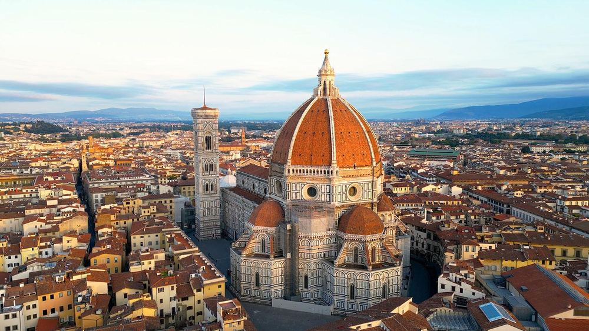

圣母百花大教堂 Cattedrale di Santa Maria del Fiore / Duomo
大教堂工程始于1296年，佛罗伦萨人为看到这座城市地标完成等待了一个多世纪。红色圆顶与彩色大理石外观后来成为佛罗伦萨最强烈的视觉标识。
现场看什么
你们不登顶也完全值得：绕外圈看外立面的白、绿、粉色大理石，再退远一点看穹顶如何从密集老城屋顶上冒出来。
你们不登顶也完全值得：绕外圈看外立面的白、绿、粉色大理石，再退远一点看穹顶如何从密集老城屋顶上冒出来。
📍 9/23 · City Walk 第一大重点
图源：《Lonely Planet Italy》p.1510 · 低分辨率个人行程参考图